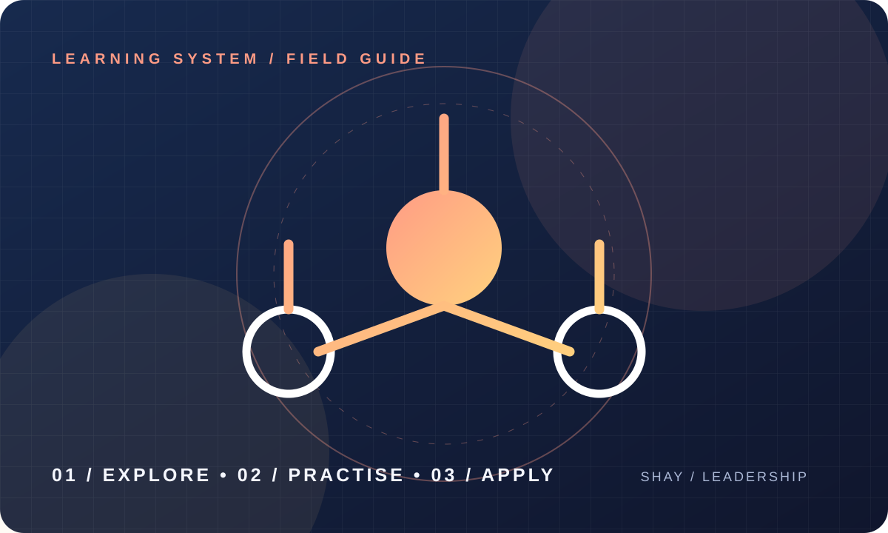
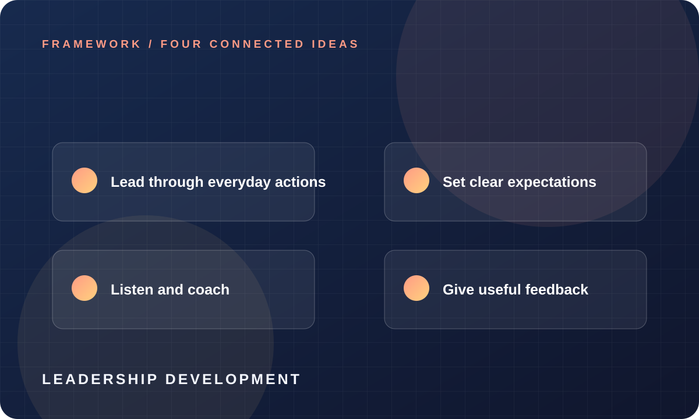
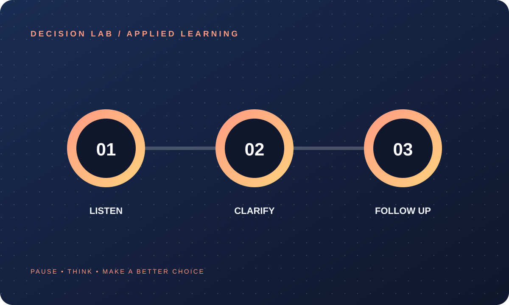

Set clear outcomes, role ownership, decision rights and review points.
PEOPLE DEVELOPMENT / INTERACTIVE HTML COURSE
Leadership Development
A practical leadership journey that turns everyday manager conversations into opportunities for clarity, coaching and trust.

VISUAL LEARNING EXPERIENCESHAY-ID / 05
SCROLL TO EXPLORE ↓
01 / COURSE OBJECTIVES
What you will be able to do.
By the end of this learning experience, you should be able to demonstrate these practical outcomes. Use them as a lens while you explore the chapters and make decisions.
Use open questions, listening and summarising to support coaching conversations.
Give feedback based on observable behaviour, impact and agreed next steps.
Create fairer participation and access to information across teams.
Address performance changes through early, respectful conversations and appropriate support.

02 / YOUR LEARNING MAP
Six steps. One connected journey.
Each chapter builds on the previous one, moving from awareness to a more confident workplace response.
Lead through behaviour
Leadership is visible in behaviour
Set clear expectations
Make outcomes, roles and priorities visible
Listen and coach
Help people think, not just comply
Give useful feedback
Make feedback specific, timely and actionable
Build inclusion and trust
Make participation and fairness part of the work
Support performance and wellbeing
Balance care with accountability
03 / EXPLORE THE CONTENT
Learn it. Connect it. Apply it.
Read through each chapter, examine the visual cues and consider how the ideas translate into day-to-day work.
CHAPTER 01 / LEAD THROUGH EVERYDAY ACTIONS
Leadership is visible in behaviour
Leadership is not only a title. It is the way a person creates clarity, builds trust, makes decisions and supports others to do meaningful work. Everyday interactions shape the experience of a team more consistently than occasional speeches or events. Small actions, repeated fairly, set the tone for how a team works together.
- Set direction and explain why the work matters.
- Create psychological safety while maintaining accountability.
- Model the behaviours you expect from others.
DESIGN TAKEAWAY
People learn what matters by noticing what leaders consistently do.
People learn what matters by noticing what leaders consistently do.
CONCEPT / 01
CHAPTER 02 / SET CLEAR EXPECTATIONS
Make outcomes, roles and priorities visible
Ambiguity creates rework and frustration. Agree on the outcome, why it matters, the owner, decision rights and what “done” looks like. Clarify dependencies and the timing of check-ins. When priorities change, explain what is changing and what should pause. Clarity is not micromanagement; it gives people the context to make good decisions independently.
- Describe the outcome and success measures.
- Clarify ownership, authority and dependencies.
- Agree on check-ins and communicate changes early.
DESIGN TAKEAWAY
Clear expectations create room for autonomy.
Clear expectations create room for autonomy.
CONCEPT / 02
CHAPTER 03 / LISTEN AND COACH
Help people think, not just comply
Coaching starts with curiosity. Ask open questions, listen without interrupting and reflect what you heard before offering advice. Explore what the person has tried, what is getting in the way and what options they see. Agree on a next step the person owns, then follow up. Coaching is not appropriate for every urgent or formal performance situation, so use judgement.
- Ask open questions and allow thinking time.
- Listen for facts, feelings and assumptions without jumping to conclusions.
- Agree on a practical next step and follow-up.
DESIGN TAKEAWAY
A useful coaching conversation leaves the other person clearer about their next move.
A useful coaching conversation leaves the other person clearer about their next move.
CONCEPT / 03
CHAPTER 04 / GIVE USEFUL FEEDBACK
Make feedback specific, timely and actionable
Feedback is more useful when it describes an observable behaviour and its impact. Avoid labels about personality or vague judgements. Explain what worked, what needs to change and why it matters. Invite the other person’s perspective, agree on a practical adjustment and check progress. Sensitive or formal concerns should follow the organisation’s process.
- Describe what you observed rather than judging the person.
- Explain impact and link the conversation to an expectation.
- Agree on a specific action and revisit it.
DESIGN TAKEAWAY
Feedback should give someone a path forward, not leave them guessing.
Feedback should give someone a path forward, not leave them guessing.
CONCEPT / 04
CHAPTER 05 / BUILD INCLUSION AND TRUST
Make participation and fairness part of the work
Inclusion shows up in how work is allocated, whose voices are heard and who receives access to information and development. Notice who is interrupted or left out of informal decisions. Offer more than one way to contribute and make expectations transparent. Address disrespect promptly and avoid assuming that one style of communication represents capability.
- Share context and opportunities fairly.
- Invite different perspectives and make room for quieter voices.
- Address exclusion and disrespect consistently.
DESIGN TAKEAWAY
Fair processes make it easier for people to contribute and challenge ideas safely.
Fair processes make it easier for people to contribute and challenge ideas safely.
CONCEPT / 05
CHAPTER 06 / SUPPORT PERFORMANCE AND WELLBEING
Balance care with accountability
A change in performance can have many causes: unclear goals, workload, skill gaps, personal circumstances or missing support. Begin with a respectful conversation grounded in observable facts. Clarify expectations, listen to the person’s perspective and agree on support and next steps. Use HR or specialist guidance where the issue is sensitive, serious or governed by policy.
- Address concerns early and privately.
- Explore barriers before assuming intent or ability.
- Agree on support, expectations, review points and appropriate escalation.
DESIGN TAKEAWAY
Care and accountability work best together.
Care and accountability work best together.
CONCEPT / 06
04 / DECISION LAB
What would you do next?
Use the ideas from the course in a short workplace situation. Select the response you would take and review the feedback.

WORKPLACE MOMENT / APPLY YOUR JUDGEMENT
A team member has missed two agreed milestones. You are frustrated, but you do not yet know whether the cause is unclear priorities, workload or a skill gap.
Choose the most appropriate response.
05 / KNOWLEDGE CHECK
Make the learning stick.
Answer five questions to check your understanding. Submit when you are ready to see your score and review the explanations.
YOUR NEXT STEP
Take the idea
into your work.
Choose one action from this course to apply in your next relevant task or conversation. Learning becomes valuable when it changes what we notice, decide or do.